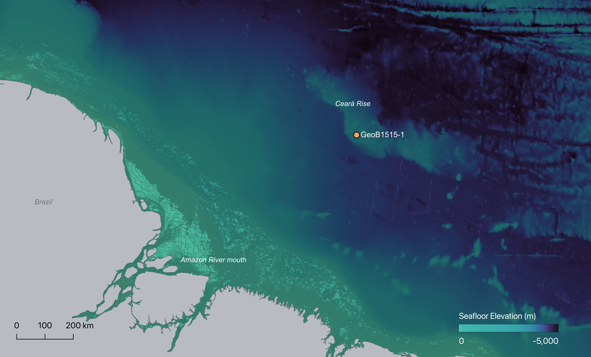

Project Overview
Marine sediment cores preserve records of changing environmental conditions through time. Variations in carbonate mineralogy can provide information about sediment composition, carbonate preservation, and potential paleoceanographic processes.
This project examines the carbonate mineral assemblage of sediment core GeoB1515-1, recovered from the western equatorial Atlantic near the Ceará Rise.
The investigation focuses on the identification and distribution of carbonate minerals, including calcite, aragonite, and other carbonate phases. Mineralogical observations are considered alongside sedimentological and paleoceanographic context.
Study Area
Core GeoB1515-1 was recovered from the western equatorial Atlantic near the Ceará Rise, in a region influenced by sediment transport and oceanographic processes associated with the Amazon margin.

Methods
X-ray Diffraction
Examination of quantitative XRD mineral assemblage results to investigate the distribution of carbonate phases within the sediment core.
Python Analysis
Scientific data processing and visualization using Python to investigate mineralogical patterns with sediment depth.
Geospatial Mapping
Bathymetric mapping in QGIS to establish the geographic and geological context of the sediment core location.
Results and Interpretation
Quantitative X-ray diffraction results were examined to investigate variations in carbonate mineral assemblages throughout sediment core GeoB1515-1.
Carbonate Mineral Distribution
The analysis focuses on calcite, aragonite, and other carbonate phases. Depth profiles are used to investigate changes in mineral composition and identify intervals for further examination.

Carbonates and Silicates
Carbonate and silicate abundances are considered together to investigate changes in bulk sediment composition. Because mineral percentages represent parts of a compositional dataset, their relationships must be interpreted with consideration of the constant-sum constraint.
Paleoceanographic Interpretation
Variations in carbonate mineralogy may reflect changes in biological carbonate production, sediment supply, carbonate preservation, or post-depositional processes.
Mineralogical observations will be evaluated alongside sedimentological information and the developing age-depth model before assigning specific paleoceanographic interpretations.
Quantitative XRD data: Dr. Christoph Vogt, University of Bremen. Unpublished dataset. See Data Attribution below.
Data Availability
The quantitative XRD dataset used in this project is unpublished and is not available for public download.
Please contact Dr. Christoph Vogt, FB05& University of Bremen for access to the full dataset!
Data Attribution
Vogt, Chr. (2026): QXRD data, full pattern quantification of mineral assemblage data for Core GeoB1515-4, unpublished data set by Dr. Christoph Vogt, Geosciences University of Bremen. To be submitted to Pangaea Data Publisher for Earth & Environmental Science, www.pangaea.de